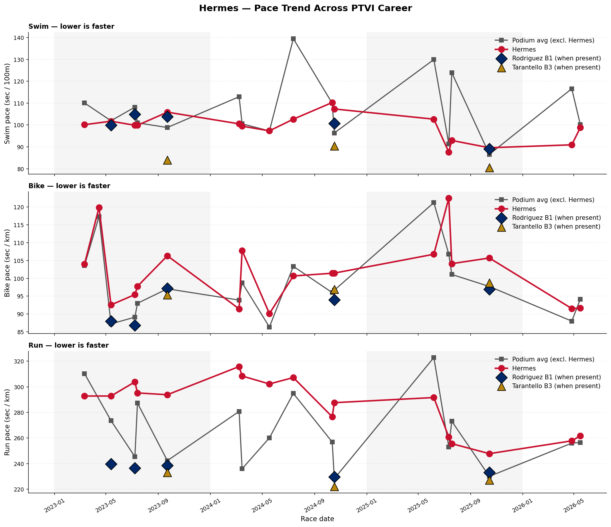
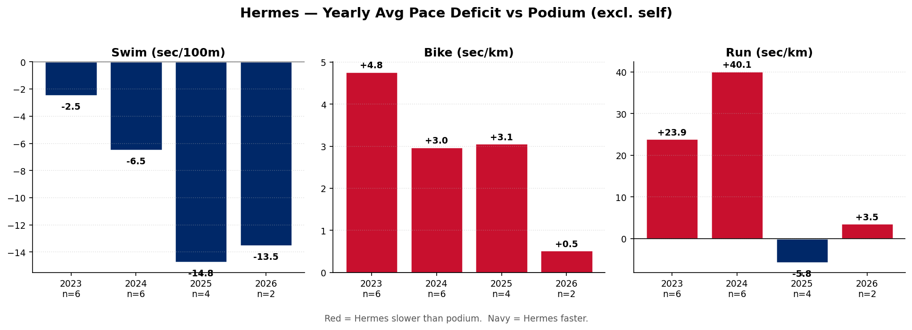
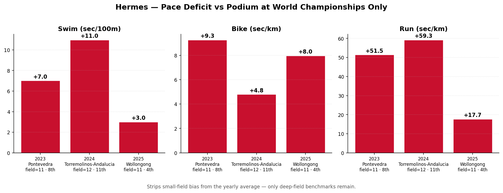
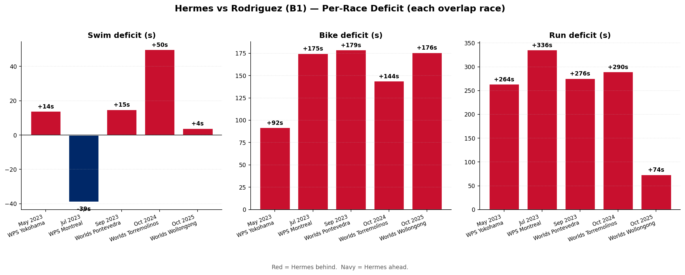
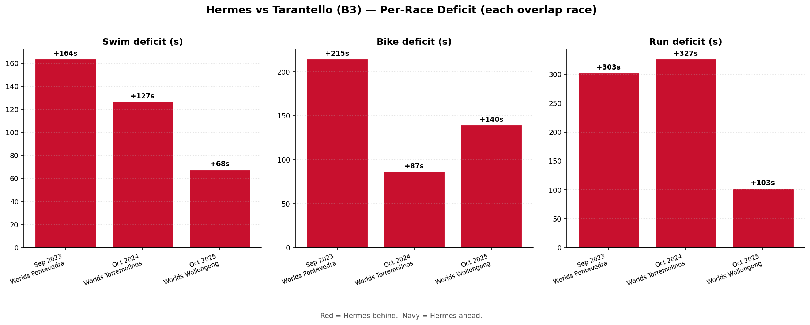

McClain Hermes is one of the fastest swimmers in PTVI women and made a step-change in run pace in 2025. Across her 19 PTVI race finishes, her swim pace has been ahead of the podium average every year, the bike gap has narrowed from +4.8 sec/km behind to +3.1, and her run pace went from +24 sec/km off podium in 2023 to -5.8 sec/km in 2025 — faster than the average podium athlete.

Hermes (red), podium average excluding herself (grey), Rodriguez B1 (navy diamonds) and Tarantello B3 (gold triangles) highlighted at the races they attended. Lower = faster. Pace normalization puts sprint and standard distance on one chart.


One Worlds per year (Pontevedra '23, Torremolinos '24, Wollongong '25). Removes small-field bias from the "all races" yearly average.
| Swim Δ (sec/100m) | Bike Δ (sec/km) | Run Δ (sec/km) | Pos | Field size | Venue | |
|---|---|---|---|---|---|---|
| year | ||||||
| 2023 | 7.02 | 9.27 | 51.47 | 8.0 | 11.0 | Pontevedra |
| 2024 | 10.98 | 4.80 | 59.27 | 11.0 | 12.0 | Torremolinos-Andalucia |
| 2025 | 3.02 | 7.98 | 17.73 | 4.0 | 11.0 | Wollongong |


Tarantello is in the B3 sub-class. Times are official (factor-adjusted) so the deficit shown is the gap on the final classification.
| n races | Swim Δ (sec/100m) | Bike Δ (sec/km) | Run Δ (sec/km) | Avg pos | |
|---|---|---|---|---|---|
| year | |||||
| 2023 | 6 | -2.50 | 4.77 | 23.89 | 3.50 |
| 2024 | 6 | -6.49 | 2.98 | 40.14 | 4.67 |
| 2025 | 4 | -14.76 | 3.06 | -5.82 | 2.25 |
| 2026 | 2 | -13.53 | 0.52 | 3.55 | 1.00 |
| n | total | swim | bike | run | |
|---|---|---|---|---|---|
| year | |||||
| 2023 | 3 | 458.0 | -3.0 | 149.0 | 292.0 |
| 2024 | 1 | 513.0 | 50.0 | 144.0 | 290.0 |
| 2025 | 1 | 260.0 | 4.0 | 176.0 | 74.0 |
| n | total | swim | bike | run | |
|---|---|---|---|---|---|
| year | |||||
| 2023 | 1 | 535.0 | 164.0 | 215.0 | 303.0 |
| 2024 | 1 | 409.0 | 127.0 | 87.0 | 327.0 |
| 2025 | 1 | 125.0 | 68.0 | 140.0 | 103.0 |
Generated 2026-05-21 17:20 — Source: World Triathlon API (race_results, events tables).